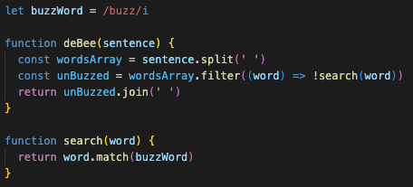

21 April 2023
I was having trouble in challenge 2, Manipulating Objects. I had to look up how to add object properties- in this case we were trying to add 'children' properties, and give them 'name' keys that contained the child's name.
This exercise expanded my understanding of dot notation, to access and manipulate properties inside objects.
In the deBee challenge, we had to use array.filter() to filter out the word 'buzz' from a string.
When I went to solve this, I thought that the best approach would be one where 'buzz' was a regular expression, because then it could account for capitalisations and/or other variations in the word. To do this, I had to refresh myself on regular expression syntax by Googling a cheat-sheet. Then I hit a problem- I could get the function to filter for the word 'buzz', but not to filter 'not' the word buzz. I tried;
But these wouldn't work.
Throughout the process, I felt a bit unsure of my approach, as if "maybe I'm going too far with trying to use a regular expression when I could try something else?", but I was curious to discover the answer- I knew there must be a way to get the inverse, and I knew that it would be useful knowledge to have going forward. I felt the same in my initial exploration of this approach during the Capitalisation challenge.
Sure enough, I found the answer !function(word) after a quick Google. I think my answer is pretty neat, and was a good learning experience. No complex conditional things, just a single variable that accounts for variations, and it's easy to change, if for instance I wanted to filter for a different word.
Of the given problem-solving techniques, I'm constantly reading error messages and console logging (including typeof) in the first instance. Then I'll try things to see what I can recall, and if I need reference, I'll Google. Sometimes Googling the method I'm using will be the first step, especially if it's a new concept.
Pseudocode was also useful to map out a plan for what I wanted to do. I used rubber ducky a bit too. I'm comfortable with improving my process with reflection- even in writing this blog about problems I had, I had an insight and managed to go back and make an improvement to the whereAreYou answer.
Asking others is usually a last resort. I didn't need to for the Katas, but I have done for other things. Another thing I've been doing is checking my notes, because I write down a lot!
I don't think I hit the required 'threshold of confusion' to ask for help during these exercises. I'm also much more comfortable asking questions and discussing things in person, rather than across Discord etc. I feel I'm able to articulate myself better that way, and you tend to get instant feedback rather than waiting for a response.
The real benefit of asking questions in this way is that the problem is documented, and others can benefit from reading the discussion. Where would we be if not for the millions of forum posts online where people have asked about specific problems?
I tend to think that figuring something out by myself is a generally better learning experience than asking for help, because I have to sit with the problem and think deeply about it before I find an answer, and that process leads to better retention- however I think this could be a misconception that I could try to break away from. Certainly in-person knowledge sharing is the gold standard.